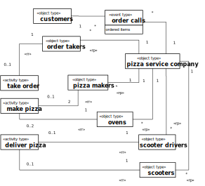
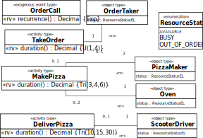
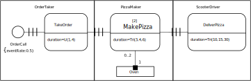

A pizza service company takes phone orders for
making and delivering pizzas, with the help of order takers, pizza makers,
ovens and a crew of pizza delivery scooter drivers. From time to time the
order takers cannot cope with the number of incoming calls, and then
customers grow impatient and hang up the phone without placing an
order.
You can inspect the model's OESjs
code on the OES GitHub repo.
Conceptual
Model
A pizza service company has resource pools for order
takers, pizza makers, pizza ovens, delivery staff and scooters. While
take order activities are performed by an order taker,
make pizza activities require both an oven and a pizza
maker. Finally, deliver pizza activities require a
delivery staff member and a scooter.
Conceptual Information Model
The
potentially relevant object types are:
pizza service company,
customers,
orders,
pizzas,
order takers,
pizza makers,
pizza ovens
delivery scooter drivers,
scooters.
Potentially relevant types of events and activities are:
pizza ordering calls coming in from customers,
order taking (an activity performed by order takers),
customers hanging up the phone when having to wait for too
long,
pizza making (performed by pizza makers using ovens),
pizza delivery (performed by delivery staff using scooters).
Object, event and activity types, together with their
participation associations, can be visually described in a conceptual
information model in the form of a special kind of UML class diagram, called
Object Event (OE) class diagram, as shown
below.

The association end
annotations «rr» and «rp» denote resource roles and resource
pools. For instance, the activity type make pizza has two
resource roles, pizza makers and oven. A pizza service company
has resource pools for order takers, pizza makers, ovens, delivery scooter
drivers and scooters.
Resource roles have resource cardinality
constraints. For instance, a make pizza activity requires 2 pizza
makers and 1 oven.
A conceptual OE
class diagram like the one above, describes resource roles (like
oven), resource role types (like ovens) and resource
cardinality constraints (like "exactly 1") for all types of activities.
An organization defines organizational positions, which are
filled by human resources. Each organizational position is characterized by
a set of human resource roles to be played by position holders. In the Pizza
Service organization, there are three positions: order takers, pizza makers
and delivery scooter drivers.
Strictly speaking, order phone calls are
immediate (zero duration) events while a take order activity is an
event with a non-zero duration. For simplicity, though, we'll often say
"events" instead of "immediate events" or "objects, events and activities"
instead of "objects, immediate events and
activities".
Conceptual Process Model
The following BPMN
diagram shows a conceptual process model of the Make-and-Deliver-Pizza
business process, with three swimlanes for the three performers of the
process:
While BPMN allows modeling the performers
of activities with swimlanes, it does not support modeling other types of
resource objects. As a workaround, we have included the resource objects
ovens and scooters in the form of BPMN Data Objects.
The
third, and most severe, issue of the BPMN model is its uniform (semantically
overloaded) use of "sequence flow" arrows for sequencing events and
activities. In the case of all three activities, incoming "sequence
flow" arrows do not mean that an activity is started, but rather that a new
planned activity is enqueued (and only started when all required resources
become available).
These issues of BPMN have been solved in DPMN,
where resource-dependent activity scheduling arrows are distinguished
from event scheduling arrows. The following DPMN diagram shows
our process model.
A conceptual DPMN process diagram does
normally not include any element representing a resource pool. Yet, it may
display the performer roles of activity types, like order taker and
pizza maker in the diagram above. It is assumed that for any
organizational position described in the underlying OE class model, the organization under
consideration has a corresponding resource pool.
Simulation Design
In our simulation design, we make the following
simplifications. We consider only one particular pizza service company,
which does not have to be modeled as an explicit object. Also, we abstract
away from individual customers, orders and pizzas. And we merge the resource
roles delivery scooter driver and scooter, keeping only
scooters as resources of deliver pizza activities.
We
consider a scenario with two order takers, ten pizza makers, five ovens and
20 scooters.
Information Design
Model
An information design model, in the form of an OE class diagram as shown below, is derived from
a conceptual information model by
Abstracting away from items that are not design-relevant.
Adding properties,functions and methods to object, event and
activity classes. In particular, a status attribute is added to
all resource object types, such as OrderTaker and Oven,
and a class-level duration function is added to all activity
classes.
An information design model defining object,
event and activity types.
Notice how functions representing random variables, like the duration
function of all activity types, are marked with the keyword (or UML
'stereotype') «rv» standing for "random variable". These random variable
functions sample from a probability distribution function (PDF), which is
symbolically indicated with expressions like Tri(30,50,40) standing
for the triangular PDF with lower and upper bounds 30 and 50, and a
median of 40.
The activity type TakeOrder is associated with
the object type OrderTaker via the implicit resource role
orderTaker (with a resource cardinality constraint of "exactly 1"),
indicated with the association end stereotype «rr» standing for "resource
role". A resource role assigns resource objects to activities.
Likewise, MakePizza is associated with PizzaMaker and
Oven as its resource roles, where the implicit pizzaMakers
resource role has a resource cardinality constraint of "exactly 2" and the
oven resource role has a resource cardinality constraint of "exactly
1".
An OE class design diagram like
the one above, defines resource roles (like pizzaMakers), resource
role types (like PizzaMaker) and resource cardinality constraints
(like "exactly 2") for all types of activities. Normally, in an OE simulation there is a one-to-one
correspondence between resource role types and resource pools. By
convention, a resource pool has the same name as the corresponding resource
role type, yet pluralized and starting with a lowercase character. For
instance, the name of the resource pool for PizzaMaker is
pizzaMakers.
Notice that OrderCall events are exogenous,
having a recurrence function defined case-wise for each of the five hours
per day operation of the pizza service company (in the attached invariant
box).
For implementing the waiting timeout event defined in the process
model, the activity type TakeOrder has a class-level
waitingTimeout function implementing a random variable with PDF
U(3,6).
Process Design Model
A process design model, in the form of a DPMN process
diagram as shown below, is derived from a conceptual process model by
abstracting away from items that are not design-relevant and possibly adding
certain computational details.
A computationally complete process design
for the Make-and-Deliver-Pizza business process.
A DPMN process design
diagram need not include elements representing resource pools. Yet, it
may display the performer roles of activity types, like OrderTaker
and PizzaMaker in the diagram above. It is assumed that for any
organizational position described in the underlying OE class model, the organization under
consideration has a corresponding resource pool. By default, each resource
role of an activity type is associated with a resource pool having the same
(yet pluralized) name, such that its resources are instances of a
corresponding resource role type, which is an organizational position in the
case of human resources.
For instance, for the MakePizza
activity a pool ovens is assigned to its resource role oven by
default. The members of the pool ovens are instances of the
(resource) object type Oven. Likewise, a pool pizzaMakers is
assigned to the MakePizza resource role pizzaMaker. The
members of this pool are instances of the organizational position
PizzaMaker. These default pool assignments are normally not shown in
a DPMN diagram, but an OE simulator takes
care of them.
 Image by monkik
Image by monkik